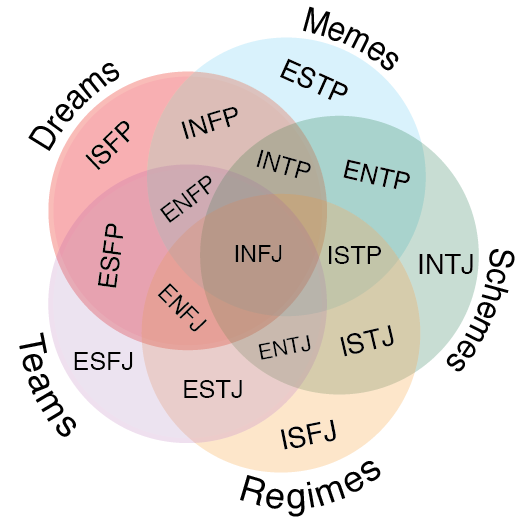

The Myers-Briggs Type Indicator (MBTI) is a widely used personality assessment tool based on the psychological theories of Carl Jung. It categorizes individuals into 16 personality types, each represented by a combination of four dichotomous preferences:
1. Extraversion (E) or Introversion (I)
2. Sensing (S) or Intuition (N)
3. Thinking (T) or Feeling (F)
4. Judging (J) or Perceiving (P)
These preferences result in 16 possible personality types, such as ISTJ, ENFP, or INFJ, each with its own unique characteristics and tendencies. The MBTI is often used to gain insights into individual differences in how people perceive the world, make decisions, and interact with others. It can be a valuable tool for personal development, career counseling, and team-building activities.
